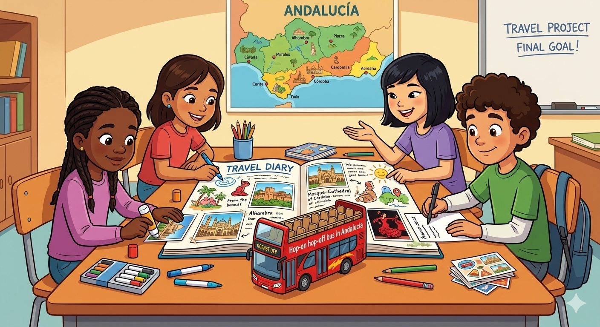

¿Qué vamos a crear con este proyecto?
¡Nos vamos de viaje por Andalucía! 🚌
En este proyecto os convertiréis en viajeros y viajeras que recorren Andalucía en un autobús turístico “Hop-on Hop-off”. En cada parada descubriréis nuevos lugares, cultura y experiencias.

🌍 ¿Cuál es vuestro reto?
En grupos, tendréis que crear un diario de viaje digital en el que contaréis vuestra aventura.
Imaginad que habéis visitado una ciudad de Andalucía…
¿Qué hicisteis? ¿Qué visteis? ¿Cómo os sentisteis?
💻 ¿Cómo lo vais a hacer?
Vais a crear vuestro diario usando Google Presentaciones, trabajando en equipo y organizando la información en diferentes diapositivas.
📝 ¿Qué debe incluir vuestro diario?
Vuestro diario tendrá estas partes:
Arrival → ¿Cómo llegasteis? ¿Cuál fue vuestra primera impresión?
What we saw → ¿Qué lugares visitasteis?
What we did → ¿Qué hicisteis allí?
Culture and feelings → ¿Qué comisteis? ¿Cómo os sentisteis?
Our opinion → ¿Os gustó el viaje? ¿Por qué?
🗣️ ¿Qué tenéis que usar?
El past simple (pasado simple)
Vocabulario sobre viajes
Frases sencillas y claras
🤝 ¿Cómo trabajaréis?
En grupo
Ayudándoos unos a otros
Compartiendo ideas
Organizándoos bien
⭐ Objetivo final
Crear un diario de viaje bonito, claro y bien organizado, que podréis compartir con vuestros compañeros y compañeras. Lo diseñaréis utilizando la herramienta llamada Google Presentaciones.
📢 Compartir
Una vez que tengáis lista vuestra presentación deberéis añadir un enlace a la misma en un muro de Padlet. Allí conseguiremos recolectar todas las presentaciones de los diarios de viaje de los grupos de 6ºA, 6ºB y 6ºC. El enlace al muro de Padlet lo enviaremos a cada grupo del colegio para que puedan visualizar vuestras presentaciones.
¿Por qué utilizamos Google Presentaciones? (Tarea 4.1.)
Para la elaboración del producto final de este proyecto, se ha decidido utilizar Google Presentaciones como herramienta principal.
Aunque inicialmente se consideró el uso de Genially por su atractivo visual e interactividad, tras analizar el contexto del aula, las características del alumnado y el tiempo disponible, se ha optado por una herramienta más accesible, funcional y adecuada.
Esta decisión se basa en los siguientes motivos:
- Seguridad: permite el acceso mediante las cuentas corporativas del centro, garantizando la protección de los datos del alumnado.
- Simplicidad y accesibilidad: es una herramienta intuitiva, adecuada para alumnado de 6º de Primaria con una competencia digital básica.
- Trabajo colaborativo: facilita que el alumnado trabaje en grupo de forma simultánea.
- Flexibilidad: permite trabajar tanto en línea como sin conexión.
- Enfoque pedagógico: evita sobrecargar al alumnado con aspectos técnicos y permite centrarse en el objetivo principal del proyecto: la producción escrita en pasado simple.
Además, el uso de presentaciones permite estructurar de forma clara el diario de viaje en diferentes apartados (Arrival, What we saw, What we did, Culture and feelings y Our opinion), facilitando la organización de la información y el desarrollo de la tarea.
En definitiva, se trata de una herramienta que se adapta mejor al contexto educativo, priorizando la seguridad, la funcionalidad y el aprendizaje del alumnado.